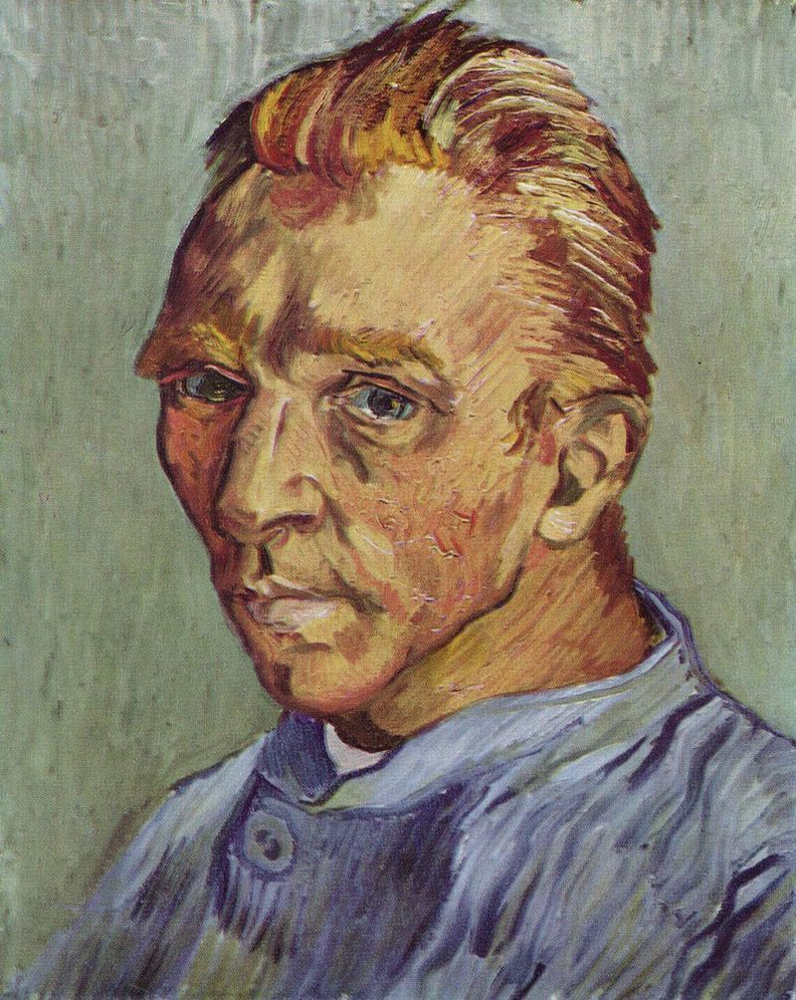
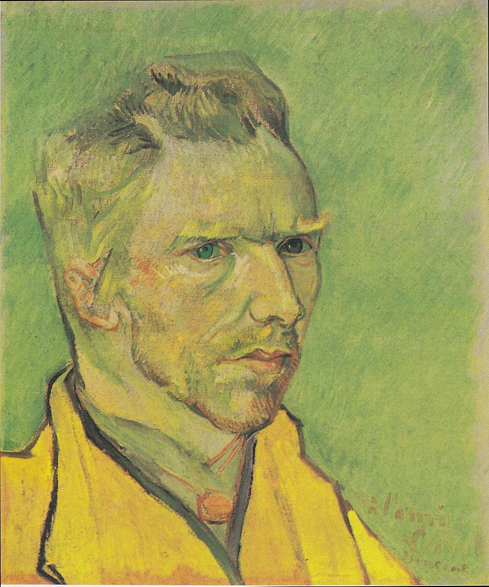
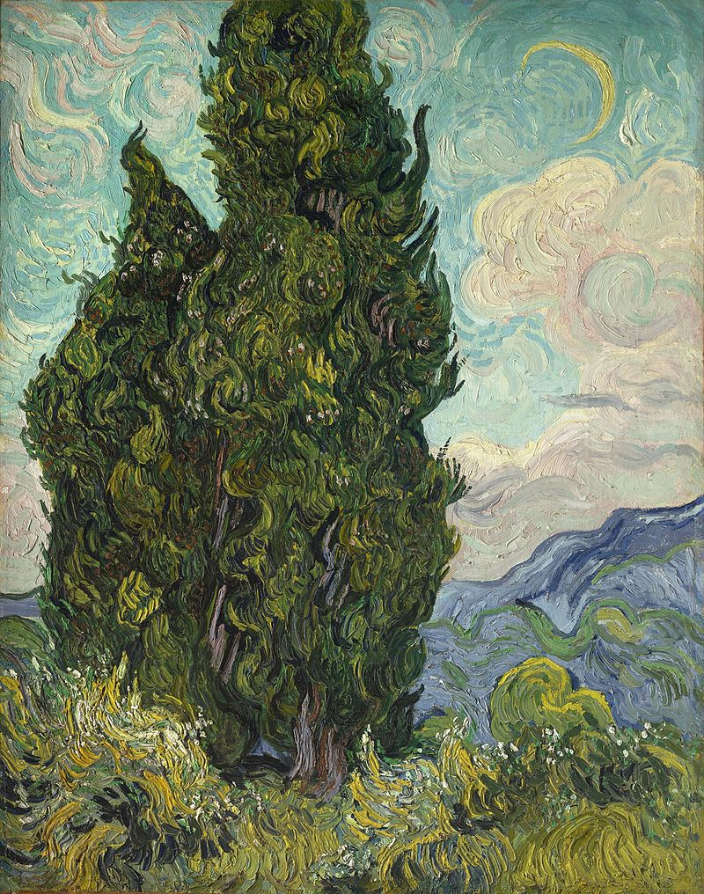

A view of a dark starry night with bright stars shining over the River Rhone.
Across the river distant buildings with bright lights shining are reflected into the dark waters of the Rhone.
Starry Night Over the Rhone, 1888. Musée d'Orsay, Paris.
Van Gogh drew, and painted with watercolours while at school, but only a few examples survive and the authorship of some has been challenged. When he took up art as an adult, he began at an elementary level. In early 1882, his uncle, Cornelis Marinus, owner of a well-known gallery of contemporary art in Amsterdam, asked for drawings of The Hague. Van Gogh's work did not live up to expectations. Marinus offered a second commission, specifying the subject matter in detail, but was again disappointed with the result. Van Gogh persevered; he experimented with lighting in his studio using variable shutters, and with different drawing materials. For more than a year he worked on single figures – highly elaborate studies in black and white,[note 11] which at the time gained him only criticism.
Later, they were recognised as early masterpieces.
Self-portraits
Van Gogh created more than 43 self-portraits between 1885 and 1889. They were usually completed in series, such as those painted in Paris in mid-1887, and continued until shortly before his death. Generally the portraits were studies, created during introspective periods when he was reluctant to mix with others, or when he lacked models, and so painted himself.
Self-Portrait with Straw Hat, Paris, Winter 1887–88. Metropolitan Museum of Art, New York

Self-Portrait Without Beard, c. September 1889. This painting may have been Van Gogh's last self-portrait. He gave it to his mother as a birthday gift.

Self-portrait dedicated to Charles Laval, Arles, November/December 1888 Private collection (F501)Self-portrait with Bandaged Ear, Easel and Japanese Print, January 1889 Oil on canvas, 60 × 49 cm Courtauld Institute Galleries, London (F527)
Flowers
Van Gogh painted several landscapes with flowers, including roses, lilacs, irises, and sunflowers. Some reflect his interests in the language of colour, and also in Japanese ukiyo-e.[244] There are two series of dying sunflowers. The first was painted in Paris in 1887 and shows flowers lying on the ground. The second set was completed a year later in Arles and is of bouquets in a vase positioned in early morning light.[245] Both are built from thickly layered paintwork, which, according to the London National Gallery, evoke the "texture of the seed-heads".
Still Life: Vase with Twelve Sunflowers, August 1888. Neue Pinakothek, MunichStill Life: Vase with Irises Against a Yellow Background, May 1890, Van Gogh Museum, AmsterdamStill Life: Vase with Fourteen Sunflowers, August 1888. National Gallery, London
Cypresses and olives
Fifteen canvases depict cypresses, a tree he became fascinated with in Arles. He brought life to the trees, which were traditionally seen as emblematic of death. The series of cypresses he began in Arles featured the trees in the distance, as windbreaks in fields; when he was at Saint-Rémy he brought them to the foreground.[251] Vincent wrote to Theo in May 1889: "Cypresses still preoccupy me, I should like to do something with them like my canvases of sunflowers"; he went on to say, "They are beautiful in line and proportion like an Egyptian obelisk."
Cypresses in Starry Night, a reed pen drawing executed by Van Gogh after the painting in 1889.Cypresses and Two Women, 1890. Kröller-Müller Museum, Otterlo, NetherlandsWheat Field with Cypresses, 1889. Metropolitan Museum of Art, New York

Cypresses, 1889. Metropolitan Museum of Art, New YorkRoad with Cypress and Star, May 1890, Kröller-Müller Museum, Otterlo